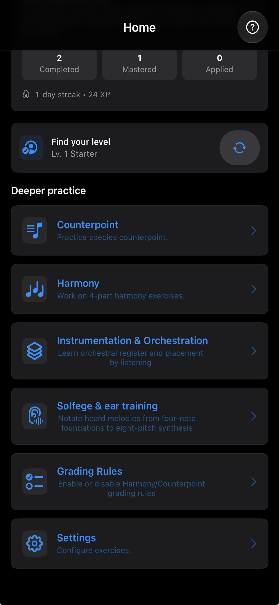
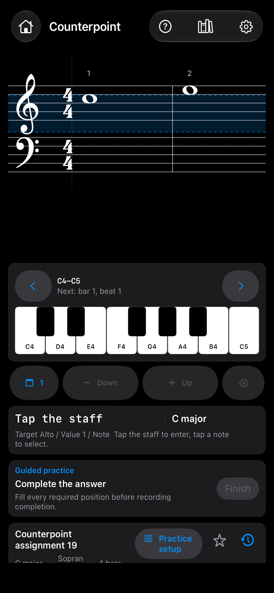
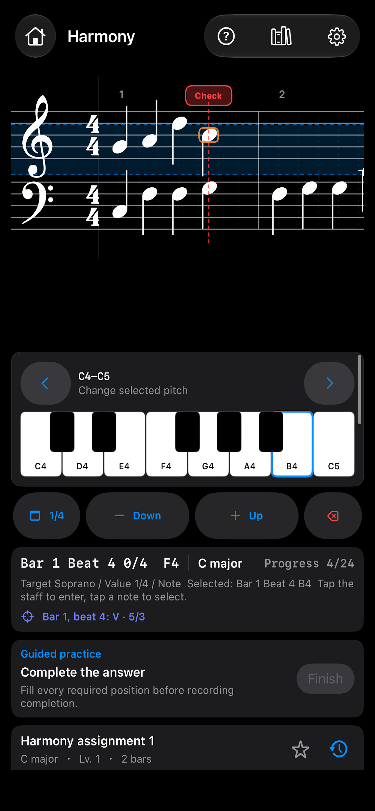
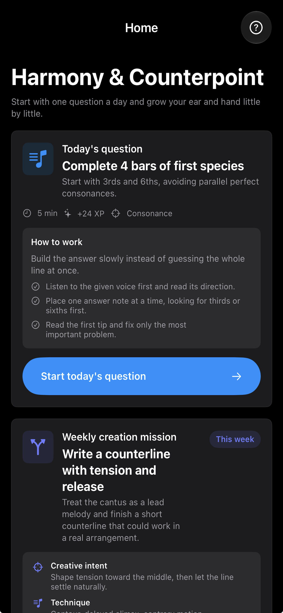
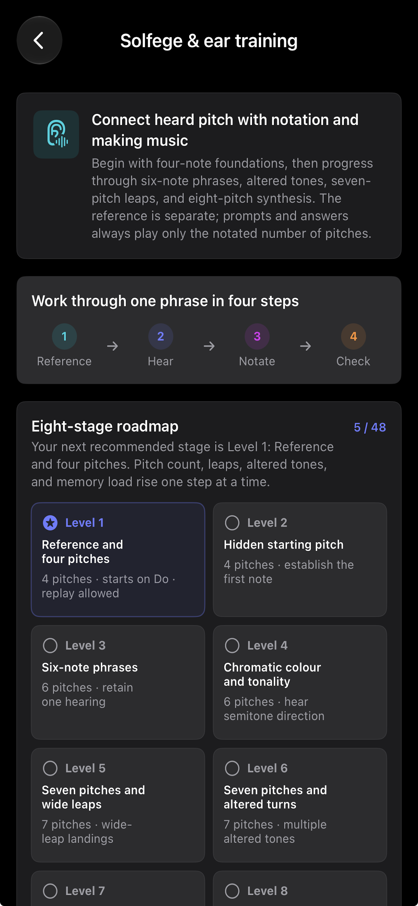
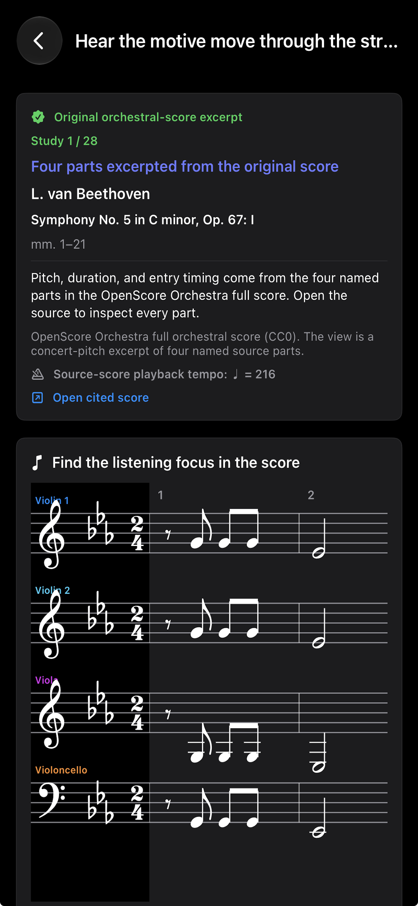
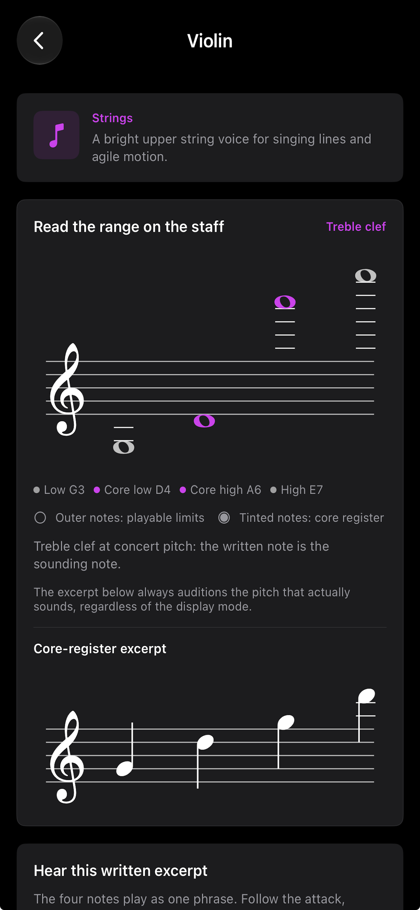

<style>
  .hc-overview {
    display: grid;
    grid-template-columns: minmax(0, 0.82fr) minmax(220px, 1.18fr);
    gap: 18px;
    align-items: center;
  }

  .hc-shot-grid {
    display: grid;
    grid-template-columns: repeat(3, minmax(0, 1fr));
    gap: 14px;
  }

  .hc-shot {
    margin: 0;
    padding: 10px;
    border: 1px solid rgba(255, 255, 255, 0.12);
    border-radius: 14px;
    background: rgba(0, 0, 0, 0.16);
  }

  .hc-shot img {
    display: block;
    width: 100%;
    height: 280px;
    object-fit: contain;
    border-radius: 9px;
    background: #000;
  }

  .hc-overview .hc-shot img {
    height: 430px;
  }

  .hc-shot figcaption {
    margin-top: 8px;
    color: var(--muted);
    font-size: 12px;
    line-height: 1.45;
  }

  .hc-shot-group + .hc-shot-group {
    margin-top: 18px;
  }

  .hc-shot-group h3 {
    margin: 0 0 10px;
    font-size: 14px;
  }

  .hc-feature-grid {
    display: grid;
    grid-template-columns: repeat(2, minmax(0, 1fr));
    gap: 12px;
  }

  .hc-feature {
    padding: 16px;
    border: 1px solid var(--line);
    border-radius: 14px;
    background: var(--card);
  }

  .hc-feature h3 {
    margin: 0 0 5px;
    font-size: 16px;
  }

  .hc-feature p {
    margin: 0;
    color: var(--muted);
    font-size: 13px;
    line-height: 1.5;
  }

  @media (max-width: 720px) {
    .hc-overview { grid-template-columns: 1fr; }
    .hc-shot-grid { grid-template-columns: repeat(2, minmax(0, 1fr)); }
    .hc-feature-grid { grid-template-columns: 1fr; }
    .hc-overview .hc-shot img { height: 360px; }
    .hc-shot img { height: 250px; }
  }
</style>

<header class="header">
  <div style="display: flex; align-items: center; gap: 14px; flex-wrap: wrap">
    
    <div>
      <div
        style="display: flex; align-items: baseline; gap: 10px; flex-wrap: wrap"
      >
        <h1 style="margin: 0">Harmony &amp; Counterpoint</h1>
        <span class="badge live">Available</span>
      </div>
      <p class="muted" style="margin: 6px 0 0; font-size: 13px">
        Music Theory, Ear Training &amp; Composition Practice — Version 2.5
      </p>
    </div>
  </div>

  <p style="margin-top: 14px">
    <strong>Harmony &amp; Counterpoint</strong> is a complete music theory
    training app for composers, musicians, and students. Build practical skills
    in harmony, counterpoint, ear training, instrumentation, orchestration,
    solfège, and jazz through interactive exercises, notation input, and
    answer-grounded feedback.
  </p>

  <div class="nav">
    <a class="btn" href="{{ '/' | relative_url }}">← All apps</a>
    <a
      class="btn"
      href="https://apps.apple.com/jp/app/harmony-counterpoint/id6759362681"
      target="_blank"
      rel="noopener"
      >View on the App Store</a
    >
    <a
      class="btn"
      href="mailto:kjdevapphelp@gmail.com?subject=Harmony%20%26%20Counterpoint%20Support"
      >Contact support</a
    >
  </div>
</header>

<section class="section">
  <h2>One practice path for the language of music</h2>
  <p class="muted" style="margin: 0 0 12px; font-size: 13px">
    Go from hearing and understanding music to writing, arranging, and checking
    your own work — with a clear next step every time you practice.
  </p>
  <div class="hc-feature-grid">
    <article class="hc-feature">
      <h3>Harmony</h3>
      <p>Build four-part harmony with chord function, inversions, figured bass, and practical voice-leading feedback.</p>
    </article>
    <article class="hc-feature">
      <h3>Counterpoint</h3>
      <p>Write independent melodic lines through species-based exercises inspired by the Fux tradition.</p>
    </article>
    <article class="hc-feature">
      <h3>Solfège &amp; Ear Training</h3>
      <p>Connect hearing, singing, and notation through a progressive path from four-note foundations to larger intervals.</p>
    </article>
    <article class="hc-feature">
      <h3>Instrumentation &amp; Orchestration</h3>
      <p>Learn register, playable range, instrumental roles, and orchestral color through real score excerpts.</p>
    </article>
    <article class="hc-feature">
      <h3>Jazz Study</h3>
      <p>Explore chord symbols, extensions, tensions, functional harmony, and the foundations of improvisation.</p>
    </article>
    <article class="hc-feature">
      <h3>Guided Daily Practice</h3>
      <p>Use level assessment, goals, study planning, daily questions, and reminders to keep building a musical habit.</p>
    </article>
  </div>
</section>

<section class="section" id="release-notes">
  <h2>Version 2.5</h2>
  <p class="muted" style="margin: 0 0 12px; font-size: 13px">
    Current release. Released on August 25, 2026.
  </p>
  <div class="hc-feature-grid">
    <article class="hc-feature">
      <h3>Deeper study paths</h3>
      <p>This update brings deeper, more practical learning to Instrumentation &amp; Orchestration and Jazz Study.</p>
    </article>
    <article class="hc-feature">
      <h3>Make practice your own</h3>
      <p>Independently choose which fields appear in Today and weekly creation: Counterpoint, Harmony, Instrumentation &amp; Orchestration, and Jazz Study — including a Jazz-only learning path.</p>
    </article>
    <article class="hc-feature">
      <h3>Work Portfolio</h3>
      <p>Develop 8-, 16-, or 32-bar pieces, listen to your work, save and restore revisions, reflect on your progress, and preserve completed works.</p>
    </article>
  </div>
</section>

<section class="section">
  <h2>Screenshots</h2>
  <p class="muted" style="margin: 0 0 12px; font-size: 12px">
    A connected learning path: start with a clear next step, write in notation,
    then develop your listening and arranging skills.
  </p>

  <div class="hc-overview">
    <figure class="hc-shot">
      
      <figcaption>
        One home for harmony, counterpoint, listening, and orchestration.
      </figcaption>
    </figure>

    <div>
      <h3 style="margin: 0 0 8px">Practice with a direction</h3>
      <p class="muted" style="margin: 0">
        Start from a level that fits, take one meaningful daily question, and
        move from theory to listening and writing in one place.
      </p>
    </div>
  </div>

  <div class="hc-shot-group">
    <h3>Write and understand</h3>
    <div class="hc-shot-grid">
      <figure class="hc-shot">
        
        <figcaption>Build a counterline directly on the staff.</figcaption>
      </figure>
      <figure class="hc-shot">
        
        <figcaption>See the exact note and moment to review.</figcaption>
      </figure>
      <figure class="hc-shot">
        
        <figcaption>Daily practice and a weekly creative task.</figcaption>
      </figure>
    </div>
  </div>

  <div class="hc-shot-group">
    <h3>Hear and arrange</h3>
    <div class="hc-shot-grid">
      <figure class="hc-shot">
        
        <figcaption>Grow from four-note foundations step by step.</figcaption>
      </figure>
      <figure class="hc-shot">
        
        <figcaption>Listen into real orchestral score excerpts.</figcaption>
      </figure>
      <figure class="hc-shot">
        
        <figcaption>Learn each instrument's range and role.</figcaption>
      </figure>
    </div>
  </div>
</section>

<section class="section">
  <h2>Support</h2>
  <p class="muted" style="margin: 0; font-size: 13px">
    Send bug reports and feature requests to
    <a
      href="mailto:kjdevapphelp@gmail.com?subject=Harmony%20%26%20Counterpoint%20Feedback"
      >kjdevapphelp@gmail.com</a
    >
    .
  </p>
  <p class="muted" style="margin: 10px 0 0; font-size: 12px">
    Please include: app version / iOS version / reproduction steps
  </p>
</section>
